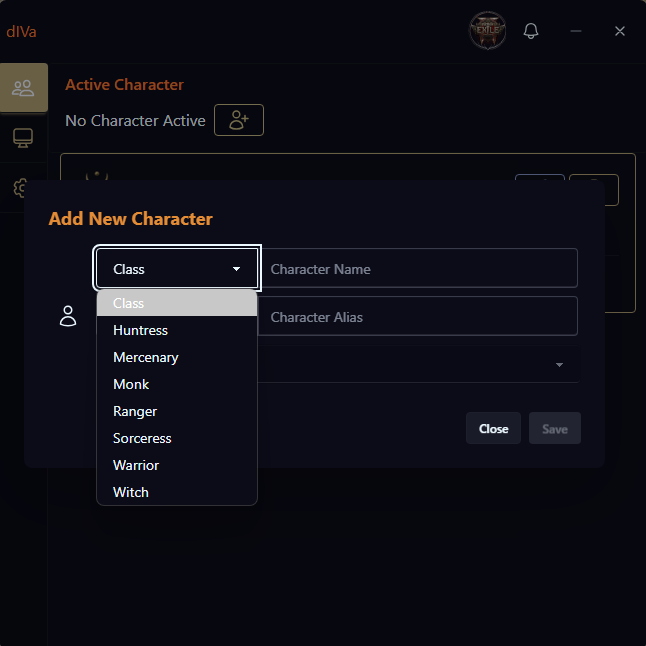

With the introduction of Path of Exile 2 Beta support in v1.3.0, dIVa now includes a specialized class detection system to ensure accurate
character tracking and analytics.
How It Works
Initial Login Detection: When you log into Path of Exile 2, dIVa detects your character but cannot automatically
determine the class from game events.
Class Selection Dialog:

A prompt will appear asking you to select your character's class from the available options:
Mercenary
Monk
Ranger
Sorceress
Warrior
Witch
Character Association: Once you select the class, dIVa associates it with your character name for future reference.
Automatic Recognition: The next time you log in with the same character, dIVa will automatically recognize the class
without prompting.
Beta Support Note
This feature is part of our Path of Exile 2 Beta support. As the game and Overwolf integration evolves, we'll update the class
detection system to use native game events when available.